Dans cette vidéo, je vais vous montrer comment configurer et utiliser absolument tous les bots de trading sur BingX, étape par étape. Nous aborderons le Futures Grid, le Spot Grid, le Martingale, les stratégies de signaux, l'achat récurrent, et bien plus encore. Ainsi, à la fin de cette vidéo, vous saurez exactement quel bot utiliser et comment le faire fonctionner. Entrons dans le vif du sujet. Première chose, vous avez besoin d'un compte BingX. Si vous n'en avez pas encore un, cliquez sur le lien dans la description. Avec mon lien, vous pouvez obtenir jusqu'à 9 800 USDT de cadeaux de bienvenue, 30 USDT de récompenses d'inscription, 500 USDT de récompenses de dépôt, et encore 500 USDT de récompenses de trading.
Interface & Outils : Interface web de l'échange de cryptomonnaies BingX (paramétrage de bot et page d'inscription).
Contenu textuel & Code : Formulaire de configuration de bot (Simple Instruction, Webhook URL, Trading Pair, Trade Direction Long/Short, Order Type) et formulaire d'inscription avec code de parrainage et bonus en USDT.
Action / Démonstration : Présentation de l'interface de création d'un bot de signaux et de la page d'inscription à la plateforme.
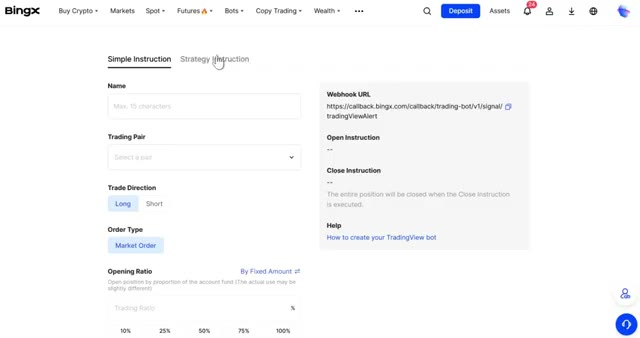
🔍 Agrandir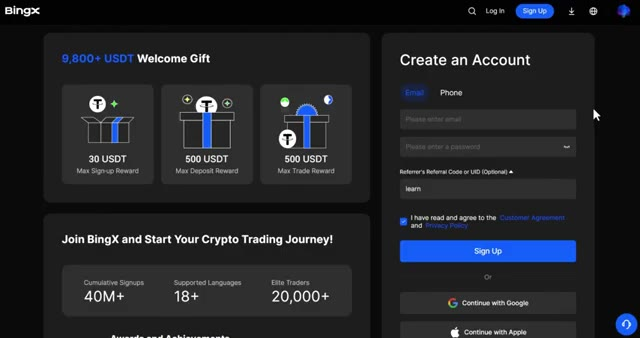
🔍 AgrandirJe vais vous montrer exactement comment réclamer cela dans un instant. Une fois que vous êtes connecté, assurez-vous d'avoir des fonds sur votre compte. Si vous devez faire un dépôt, cliquez sur dépôt dans le coin supérieur droit, sélectionnez USDT, choisissez votre réseau, et envoyez vos fonds depuis votre autre échange ou portefeuille externe. Ils arriveront en quelques minutes. Maintenant, passons aux bots. Tout en haut de la page, cliquez sur bots. Immédiatement, vous pouvez voir cinq types de bots principaux : la grille futures, le martingale futures, la grille spot, la grille spot infinity et les stratégies de signal. Et juste en dessous de la section spot, sur les bots spot, vous trouverez également un bot d'achat récurrent.
Interface & Outils : Échange de cryptomonnaies BingX (interface web).
Contenu textuel & Code : Menus de dépôt, sélection de cryptos (USDT, USDC, BTC, ETH, TRX) et bannières promotionnelles.
Action / Démonstration : Navigation sur l'interface de dépôt de l'exchange et présentation des fonctionnalités de la plateforme.
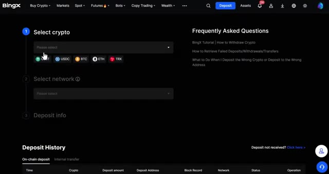
🔍 Agrandir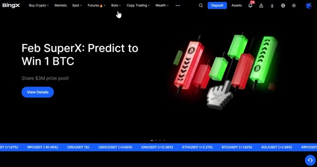
🔍 Agrandirnous allons aborder les différentes stratégies, chacune d'entre elles est conçue pour un style de trading différent, alors laissez-moi vous présenter chacune d'elles en détail avant de commencer à créer des bots. Voici un bref aperçu de ce que fait chacune d'elles. Grille Futures : cela permet de générer des profits grâce aux fluctuations des prix en plaçant des ordres d'achat et de vente dans une fourchette de prix définie avec effet de levier. Martingale Futures : cela ajuste automatiquement les coûts de votre position à mesure que le prix baisse. C'est idéal pour les marchés volatils. Grille Spot : c'est le même concept que la grille Futures mais sans effet de levier. Le risque est plus faible et c'est idéal pour les marchés stagnants. Grille Infinie Spot : c'est une version avancée de la grille Spot sans limite supérieure
Interface & Outils : Plateforme d'échange de cryptomonnaies BingX (interface web).
Contenu textuel & Code : Menu des stratégies de trading automatisées : Futures Grid, Martingale, Spot Grid, Spot Infinity Grid, et Signal Strategies avec descriptions textuelles.
Action / Démonstration : Navigation et survol des différentes options de bots de trading disponibles sur la plateforme BingX.
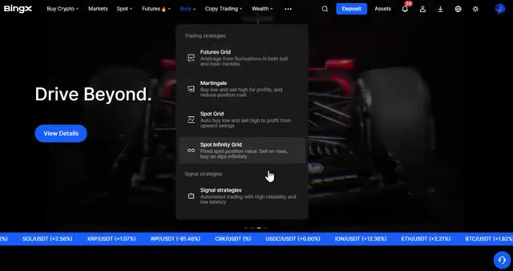
🔍 Agrandir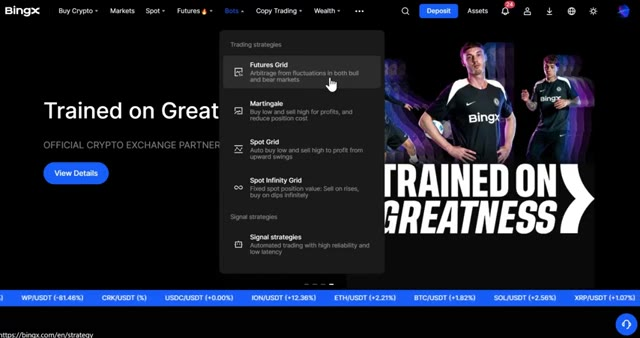
🔍 Agrandir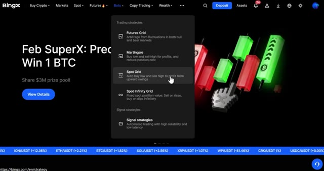
🔍 AgrandirLa limite de prix conçue pour l'arbitrage non-stop et les stratégies de signaux se connecte à des plateformes externes comme TradingView pour exécuter automatiquement des transactions basées sur vos signaux. Lorsque vous cliquez sur n'importe quel bot, vous pouvez voir l'investissement total actuellement en cours dans ce bot et combien d'utilisateurs l'utilisent activement. Vous pouvez également consulter vos bots en cours d'exécution et votre historique juste ici. Commençons par le bot de grille futures, l'un des plus populaires. Cliquez sur grille futures et un nouveau formulaire de commande apparaîtra. Ici, vous avez deux modes, automatique et manuel. En mode automatique, sélectionnez votre paire de cryptos.
Interface & Outils : Plateforme d'échange de cryptomonnaies BingX (interface web).
Contenu textuel & Code : Options de bots de trading automatisés (Futures Grid, Martingale, Spot Grid, Spot Infinity Grid, Signal Strategies) et métriques d'investissement total et d'utilisateurs.
Action / Démonstration : Navigation dans le menu des bots de trading et présentation des différentes stratégies automatisées disponibles sur la plateforme.
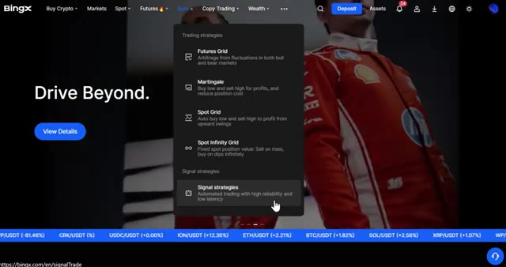
🔍 Agrandir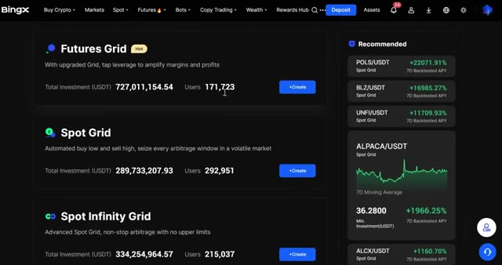
🔍 AgrandirPour cet exemple, prenons Bitcoin USDT. Vous pouvez sélectionner trois directions, neutre, qui profite d'un mouvement de prix dans les deux sens, long, qui profite lorsque le prix monte, et court, qui profite lorsque le prix baisse. Si vous choisissez automatique, BingX sélectionnera automatiquement la fourchette de prix et le profit par grille pour vous. Tout ce que vous avez à faire est de définir votre effet de levier et votre montant d'investissement.
Interface & Outils : BingX (Interface Web d'échange de cryptomonnaies)
Contenu textuel & Code : Paire BTCUSDT à 70290.7 (+1.78%), options de stratégie (Auto/Manual, Neutral/Long/Short), fourchette de prix 64619.1 - 75670.7 USDT, effet de levier 5X.
Action / Démonstration : Sélection des modes de direction de grille (Neutral, Long, Short) et visualisation des paramètres automatiques sur le bot Futures Grid de BingX.
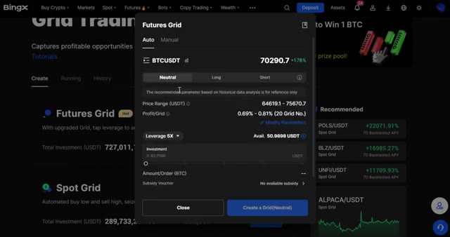
🔍 AgrandirVous pouvez également activer le take profit et le stop loss ici. Ceux-ci peuvent être définis par prix, où le bot se ferme lorsqu'il atteint un niveau de prix spécifique, ou par ratio où il se ferme en fonction d'un pourcentage de gain ou de perte par rapport à votre entrée. Les deux vous donnent le contrôle sur votre gestion des risques. Vous verrez également une option pour appliquer un bon de subvention de trading sur grille.
Interface & Outils : Échange de cryptomonnaies BingX (Interface Web - Menu de configuration des options de trading automatisé).
Contenu textuel & Code : Fenêtre modale "Futures Grid" affichant les options TP/SL avec les bascules "By Price", les champs de saisie pour le ratio de déclenchement ("Trigger Ratio") et des pourcentages prédéfinis (5%, 10%, 25%, 50%, 100%, 150%).
Action / Démonstration : Le curseur de la souris survole l'option "By Price" pour configurer les seuils de Take Profit et de Stop Loss du bot.
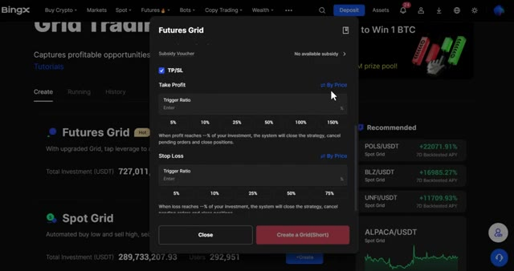
🔍 AgrandirEn résumé, si votre stratégie se solde par une perte, le système vous émettra automatiquement une subvention en USDT pour compenser ce P&L négatif. C'est un beau filet de sécurité si vous en avez un de disponible. Si vous voulez plus de contrôle, vous pouvez soit sélectionner directement le mode manuel, soit modifier les paramètres à partir du mode automatique.
Interface & Outils : Interface web de l'échange de cryptomonnaies BingX (module Grid Trading).
Contenu textuel & Code : Paramètres du Futures Grid : Price Range (64619.1 - 75670.7 USDT), Leverage 5X, Available Balance (50.9898 USDT), Subsidiary Voucher (No available subsidy), et options TP/SL avec Take Profit.
Action / Démonstration : Configuration des paramètres d'un robot de trading en grille (Grid Trading) sur les contrats futures avec sélection de l'effet de levier et des niveaux de Take Profit/Stop Loss.
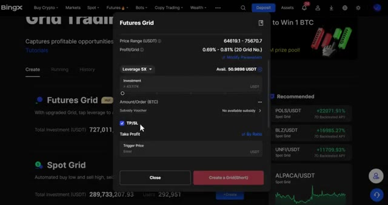
🔍 AgrandirÇa basculera automatiquement. Ici, vous pouvez définir votre propre fourchette de prix inférieure et supérieure et choisir votre nombre de grilles. n'importe où de 2 $ à 200 $. Plus vous définissez de grilles, plus les ordres d'achat et de vente sont passés dans votre fourchette, capturant des profits plus petits mais plus fréquents. Faites défiler vers le bas et vous trouverez des paramètres avancés où vous pouvez définir à nouveau votre take profit et votre stop loss, ainsi qu'une option de déclenchement. Le déclencheur vous permet de définir un prix spécifique auquel le bot commencera seulement à fonctionner. Utile si vous voulez attendre que le marché atteigne un certain niveau avant d'activer la stratégie. Une fois que tout a l'air bien, cliquez
Interface & Outils : Échange de cryptomonnaies BingX (interface web de bot de trading)
Contenu textuel & Code : Paire BTCUSDT, prix actuel 70346.6 (+1.95%), mode manuel, position Short, fourchette de prix (Lower Price: 64619.1, Upper Price: 75670.7), champ "Grid No." (2 - 200), effet de levier 5X, solde disponible 50.9898 USDT.
Action / Démonstration : Configuration manuelle des paramètres d'un bot Futures Grid (fourchette de prix et nombre de grilles) sur BingX.
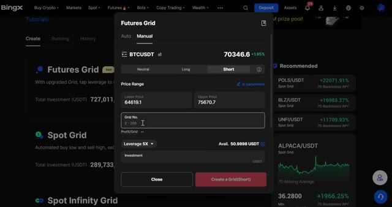
🔍 Agrandircréez une grille et votre bot est lancé. Une fois qu'il est en marche, rendez-vous dans la section en cours. Ici, vous pouvez voir tous vos bots actifs, surveiller les performances et modifier vos take profit et stop loss à tout moment. Si vous voulez arrêter le bot, cliquez simplement sur fermer. Une fenêtre de confirmation apparaîtra pour vous demander. Procédez à la fermeture de la stratégie de grille BTCUSDT et laissez le système vous aider à vendre le BTC contre de l'USDT.
Interface & Outils : Site web / Plateforme de trading BingX (section Grid Trading, onglet Running).
Contenu textuel & Code : Détails du bot actif : paire BTCUSDT, effet de levier 6X, statut "Running", profit total (+0.0000 / +0.00%), APY (+0.00%), investissement de 20.00 USDT, et bouton "Close".
Action / Démonstration : Visualisation du bot de grille actif et de ses performances en temps réel sur la plateforme BingX.
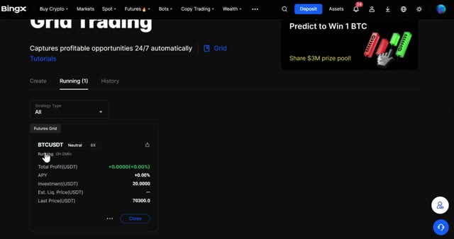
🔍 AgrandirEnsuite, il y a le Spot Grid Bot. Celui-ci fonctionne exactement comme le Futures Grid, mais sans effet de levier. Il n'y a donc aucun risque de liquidation. C'est parfait si vous voulez une approche plus sûre et plus conservatrice du grid trading. Cliquez sur créer sur le spot grid. Vous verrez le même formulaire de commande qu'avant, mais remarquez qu'il n'y a pas d'option de direction. Puisque vous achetez uniquement au comptant, vous êtes toujours acheteur par défaut. Sélectionnez votre crypto et vous pourrez voir l'APY testé rétrospectivement, la fourchette de prix et le profit par grille juste ici. C'est idéal pour avoir une idée des performances historiques du bot. Définissez votre take profit et votre stop loss comme
Interface & Outils : Plateforme d'échange de cryptomonnaies BingX (interface web).
Contenu textuel & Code : Options de bots de trading (Spot Grid, Spot Infinity Grid), statistiques d'investissement total et de performance (APY sur 7 jours), et fenêtre de configuration pour BTC/USDT (fourchette de prix, nombre de grilles, montant d'investissement).
Action / Démonstration : Navigation sur la plateforme et sélection du bouton de création du bot "Spot Grid".
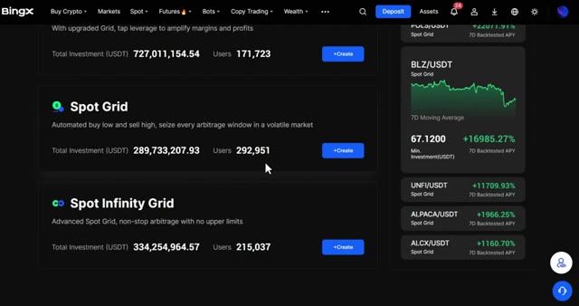
🔍 Agrandir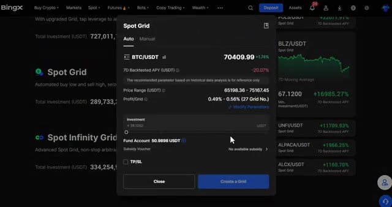
🔍 Agrandiravant et d'entrer votre montant d'investissement. Si vous voulez ajuster les paramètres manuellement, modifiez-les simplement et cela passera en mode manuel où vous pourrez définir votre propre fourchette de prix et votre nombre de grilles. Faites défiler vers le bas et vous trouverez à nouveau le déclencheur dans le paramètre TPSL ainsi que deux nouveaux basculeurs. Vendre toutes les terminaisons.
Interface & Outils : Échange de cryptomonnaies BingX (Bots de trading - Spot Grid)
Contenu textuel & Code : Fenêtre modale "Spot Grid" affichant la fourchette de prix (Price Range : 65198.36 - 75167.45 USDT), le profit par grille (0.49% - 0.56%, 27 grilles), le champ de saisie "Investment", le solde du compte (Fund Account : 50.9898 USDT) et les options de Take Profit / Stop Loss (TP/SL).
Action / Démonstration : Saisie du montant d'investissement dans le champ dédié de la configuration du bot de grille.
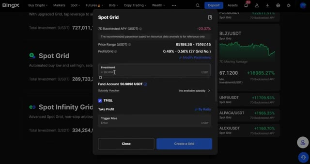
🔍 AgrandirQuand le bot s'arrête, il revend automatiquement tous vos actifs en USDT pour que vous n'ayez pas à le gérer manuellement. En mode poignée, si vous êtes haussier sur une cryptomonnaie à long terme, ce mode réinvestit vos profits de trading sur grille pour acheter davantage de cette cryptomonnaie au prix du marché. Vous gagnez donc grâce à la grille et accumulez plus de pièces en même temps. Une fois que tout est prêt, cliquez sur créer une grille, comme précédemment. Une fois qu'il est en marche, vous pouvez le retrouver dans la section en cours. Ajustez votre take profit et stop loss et fermez-le quand vous voulez avec les mêmes options de vente. Vous aurez deux options. Oui, tout vendre
Interface & Outils : Interface de la plateforme d'échange de cryptomonnaies BingX.
Contenu textuel & Code : Menus de configuration de bots de trading sur grille, options de Take Profit / Stop Loss, et statistiques de performance de bots recommandés (ex: POLS/USDT).
Action / Démonstration : Navigation dans l'interface de configuration des bots de grille et survol des options avancées de gestion des positions.
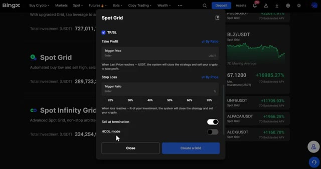
🔍 Agrandir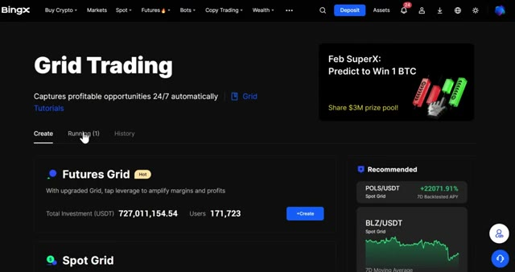
🔍 Agrandirordres, où le système convertit automatiquement tout en USDT pour vous, ou non, je vends moi-même, où vous conservez le BTC et gérez la vente manuellement. Choisissez ce qui vous convient le mieux. Vient ensuite le Spot Infinity Grid. Considérez cela comme la version avancée du Spot Grid. Il est conçu pour de l'arbitrage non-stop sans limite de prix supérieure, de sorte qu'il continue de fonctionner peu importe à quel faut le prix monte. Cliquez sur créer sur Spot Infinity Grid. Vous verrez des paramètres similaires à ceux d'avant, mais ici vous remarquerez un rendement annuel sur 30 jours affiché, donnant une performance réelle
Interface & Outils : Échange de cryptomonnaies BingX (Bots de trading, Spot Grid et Spot Infinity Grid).
Contenu textuel & Code : Paires de trading BTC/USDT, options de vente automatique/manuelle des ordres, statistiques d'investissement et paramètres de grille (Min. Price, Profit/Grid, Investment).
Action / Démonstration : Navigation et explication des bots de trading automatisés, confirmation de fermeture de stratégie et configuration du Spot Infinity Grid.
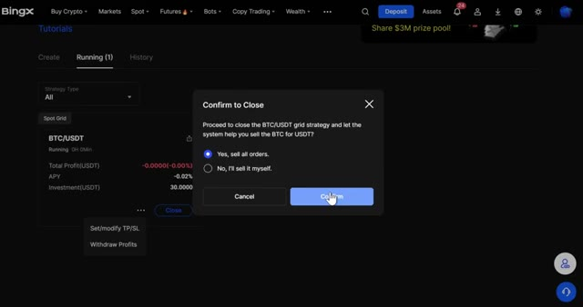
🔍 Agrandir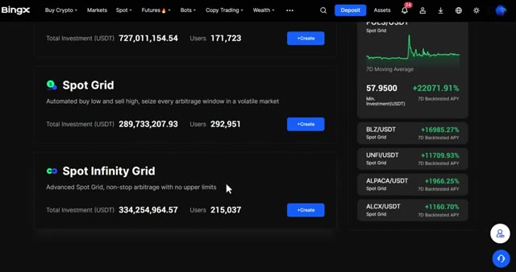
🔍 Agrandir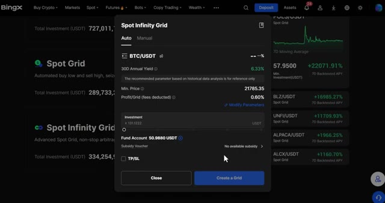
🔍 Agrandirrepère et un champ de prix minimum au lieu d'une fourchette supérieure puisqu'il n'y a pas de plafond sur celui-ci. Cliquez sur ajuster les paramètres pour passer en mode manuel où vous pouvez définir votre propre prix minimum et profit par grille avec les frais déjà déduits. Ce que vous voyez est donc ce que vous obtenez réellement. Faites défiler vers le bas et vous trouverez toujours les options de déclenchement et de TP/SL comme avant. Une fois que vous êtes satisfait des paramètres, cliquez sur créer une grille et elle est mise en ligne. Passons maintenant au bot Futures Martingale. Celui-ci ajuste automatiquement vos coûts de position lorsque le prix évolue contre vous, ce qui le rend idéal pour les marchés volatils où vous vous attendez à une reprise.
Interface & Outils : Plateforme d'échange de cryptomonnaies BingX (section Bots).
Contenu textuel & Code : Paramètres de grille manuelle (Min. Price : 21785.35, Profit/Grid : 0.6%, Investment) et sélection de stratégies de trading.
Action / Démonstration : Configuration des paramètres manuels du bot Spot Infinity Grid sur la plateforme BingX.
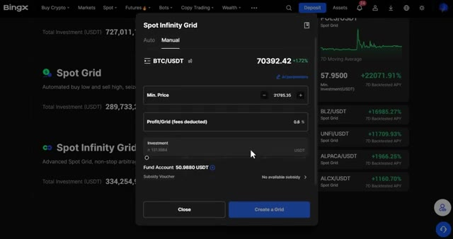
🔍 Agrandir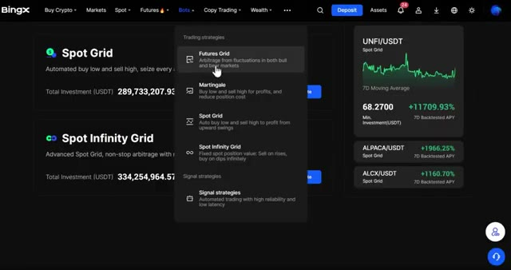
🔍 AgrandirCliquez sur Créer sur Futures Martingale. Sélectionnez votre paire de trading, définissez votre effet de levier, et choisissez votre direction, long ou short. Définissez votre objectif de profit. C'est le pourcentage de gain que le bot vise avant de clôturer le trade, et votre investissement total. Faites défiler vers le bas et vous verrez quelques paramètres clés.
Interface & Outils : Échange de cryptomonnaies BingX (interface de bot de trading)
Contenu textuel & Code : Paire BTCUSDT, effet de levier configuré à 5X, boutons de validation (Confirm / Cancel), curseur d'ajustement de l'effet de levier.
Action / Démonstration : Configuration et ajustement de l'effet de levier pour le bot de trading Futures Martingale.
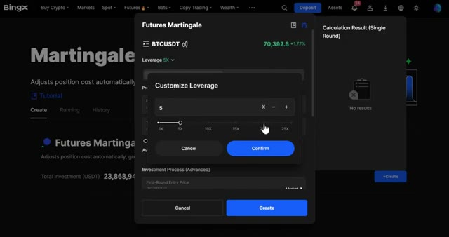
🔍 Agrandirprocessus vous montre comment le bot va répartir votre capital sur plusieurs entrées à mesure que le prix évolue. Les paliers de prix définissent la baisse que le prix doit enregistrer avant que le bot n'ajoute à la position, et le multiplicateur de montant contrôle à quel point chaque achat supplémentaire devient plus important. Par exemple, un multiplicateur de deux signifie que chaque nouvel ordre est le double du précédent. L'ajout maximal par round limite le nombre de fois que le bot peut ajouter à la position en un seul cycle, vous protégeant ainsi d'une exposition excessive en cas de forte tendance baissière. Une boucle automatique et lorsqu'elle est activée, le bot démarre automatiquement un
Interface & Outils : Échange de cryptomonnaies BingX (interface web de création de bot Futures Martingale)
Contenu textuel & Code : Paramètres de configuration : Price Step réglé à 1%, Amount Multiplier réglé à 1.1, First-Round Entry Price à 70427.6, ainsi que les options Auto Loop et Stop Loss (SL).
Action / Démonstration : Configuration des paramètres avancés du bot de trading Martingale pour définir la répartition du capital et la gestion des ajouts de positions.
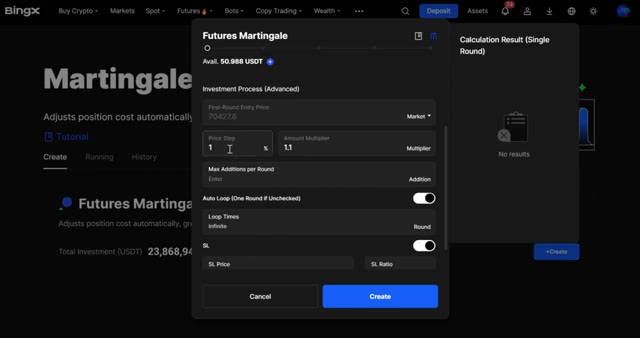
🔍 Agrandirnouveau cycle après avoir atteint l'objectif de profit. Si vous décochez cette option, il s'exécute un seul tour et s'arrête. C'est utile si vous souhaitez examiner les performances avant de le relancer. Vous pouvez également définir un stop loss ici pour une protection supplémentaire. Une fois que vous avez terminé, cliquez sur créer. Rendez-vous dans la section en cours d'exécution pour le surveiller, ajuster votre stop loss ou le fermer à tout moment en utilisant la même option de confirmation qu'auparavant.
Interface & Outils : Interface de l'échange de cryptomonnaies BingX (section Futures Martingale Bots).
Contenu textuel & Code : Paramètres de configuration du bot (Auto Loop, SL Price, SL Ratio) et suivi de position active sur BTCUSDT (Long 5X, Total Profit: -0,0024 USDT, APY: -2,83%).
Action / Démonstration : Configuration des options avancées du bot Martingale puis visualisation du bot en cours d'exécution.
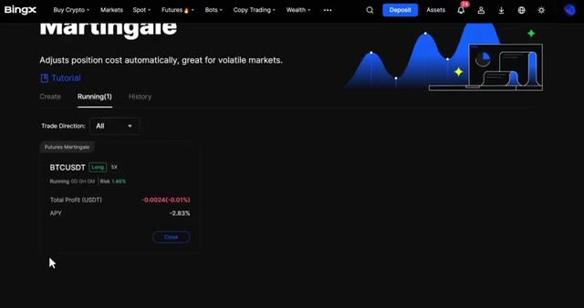
🔍 AgrandirEnsuite, il y a Signal Strategies. C'est une fonctionnalité puissante qui permet à BingX de recevoir des signaux de plateformes externes comme TradingView pour exécuter automatiquement des transactions sur futures perpétuels. Vous créez et configurez des instructions de trading pour qu'elles correspondent exactement à votre stratégie. Au bas de la page, vous pouvez voir toutes les instructions que vous avez déjà créées.
Interface & Outils : Interface web BingX (section Signal Trading / Futures)
Contenu textuel & Code : Texte explicatif sur la réception de signaux externes (TradingView) pour automatiser les transactions sur futures perpétuels, avec deux types d'instructions (Simple Instruction et Strategy Instruction) et un bouton "Create".
Action / Démonstration : Présentation de la fonctionnalité de trading par signaux de la plateforme BingX.
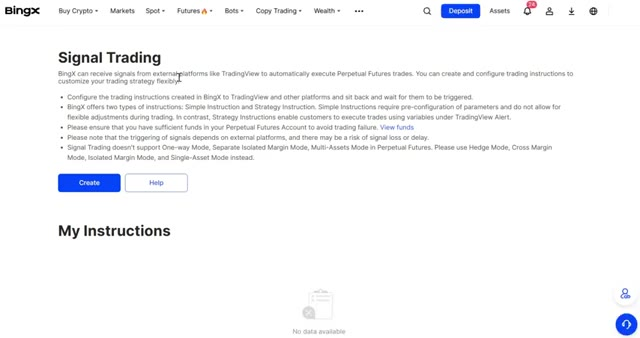
🔍 AgrandirCliquez sur Créer. Vous aurez deux modes : Instruction simple et Instruction stratégique. En instruction simple, définissez un nom pour votre stratégie, choisissez votre paire de trading, définissez la direction du trade et le type d'ordre, et définissez la marge de votre position, soit par ratio, qui est un pourcentage de votre solde disponible, soit par montant fixe, qui est une valeur USDT déterminée.
Interface & Outils : Interface Web de l'échange de cryptomonnaies BingX (Bots / TradingView bot).
Contenu textuel & Code : Formulaire de configuration avec les champs : Name, Trading Pair, Open/Close Type (By Amount / By Ratio), options TP/SL, bouton Create et encadré Webhook URL.
Action / Démonstration : Le curseur de la souris survole l'onglet 'Simple Instruction' lors de la configuration du bot de trading.
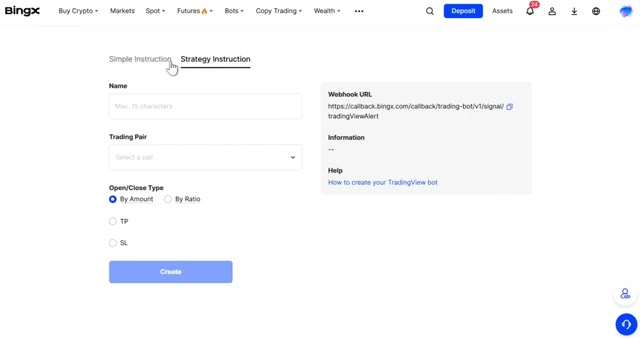
🔍 AgrandirConfigurez vos TP et SL, et voici la partie clé. Vous verrez votre URL de webhook. C'est l'URL que vous collerez dans TradingView afin qu'il puisse envoyer des signaux directement à BingX et déclencher vos trades automatiquement. Dans les instructions de la stratégie, définissez un nom, choisissez votre paire de trading et définissez votre type d'ouverture et de fermeture, soit par montant, soit par ratio.
Interface & Outils : BingX, TradingView
Contenu textuel & Code : URL de webhook BingX, paramètres de stratégie, options TP/SL, configuration des alertes TradingView.
Action / Démonstration : Copie de l'URL du webhook depuis BingX et collage dans la configuration d'alerte TradingView.
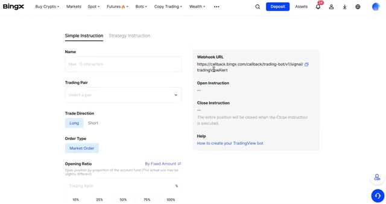
🔍 Agrandir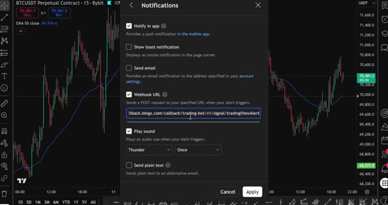
🔍 Agrandir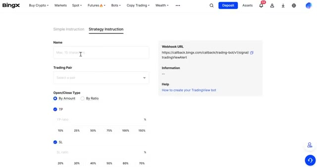
🔍 AgrandirVous verrez également l'URL du webhook sur le côté droit ici. Une fois que tout est configuré, cliquez sur Créer, et votre stratégie de signal est prête à recevoir des instructions. Le dernier emplacement est l'achat républic, et vous le trouverez juste en dessous de la section des emplacements. C'est la version de BingX du lissage des coûts d'achat.
Interface & Outils : Échange de cryptomonnaies BingX (interface web).
Contenu textuel & Code : Configuration de stratégie de signal, gestion de la marge, Take Profit (TP), Stop Loss (SL), et menu des options de bots et d'achat récurrent (Recurring Buy).
Action / Démonstration : Configuration et validation de la stratégie de signal sur la plateforme BingX en cliquant sur le bouton de création, puis navigation dans les menus pour localiser l'achat récurrent.
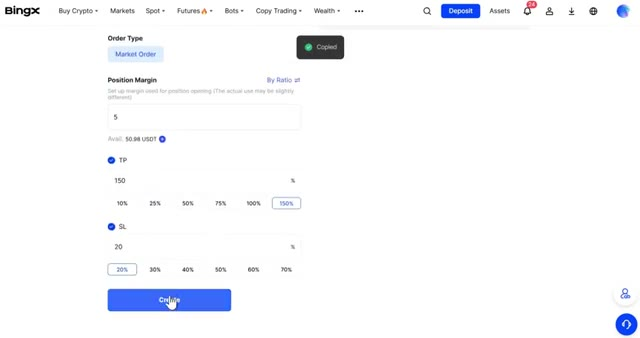
🔍 Agrandir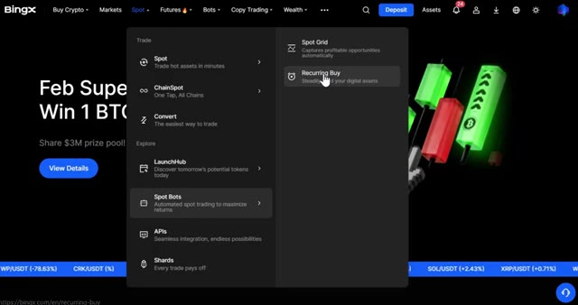
🔍 AgrandirIl achète automatiquement de la crypto à des intervalles définis, ce qui vous permet d'accumuler sans jamais avoir à anticiper le marché. Sélectionnez la crypto avec laquelle vous voulez payer et la crypto que vous voulez recevoir. Pour cet exemple, prenons le BTC. Vous pouvez également ajouter plusieurs cryptos si vous souhaitez faire du DCA sur plus d'une pièce en même temps.
Interface & Outils : Interface web de l'échangeur crypto BingX (section "Recurring Buy").
Contenu textuel & Code : Formulaire de configuration d'achat récurrent avec sélection de la devise de paiement (USDT), de la crypto à recevoir (BTC), et options pour définir la fréquence d'investissement.
Action / Démonstration : Sélection des cryptomonnaies pour mettre en place un plan d'investissement automatisé (DCA).
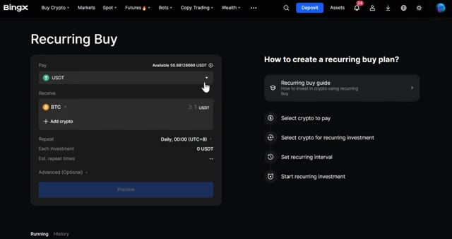
🔍 AgrandirEntrez combien d'USDT vous voulez dépenser par achat. Sous répéter, sélectionnez votre intervalle d'achat. Vous pouvez choisir toutes les heures, 6 heures, 12 heures, chaque jour, chaque semaine ou toutes les deux semaines. Sur le côté droit, vous pouvez également définir l'heure exacte à laquelle vous voulez que l'achat ait lieu. Utile si vous voulez acheter à un moment précis de la journée.
Interface & Outils : Échange de cryptomonnaies BingX
Contenu textuel & Code : Formulaire de configuration d'achat récurrent avec sélection du montant en USDT, choix des cryptos (BTC, ETH), intervalle de répétition (Daily, 00:00 UTC+8) et résumé de l'investissement (20 USDT).
Action / Démonstration : Configuration et paramétrage d'un plan d'investissement automatisé (DCA).
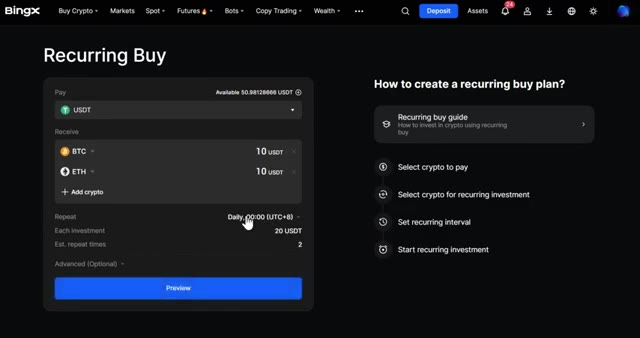
🔍 AgrandirUne fois que vous êtes satisfait, cliquez sur confirmer. Si vous cliquez sur avancer, vous pouvez définir un nombre maximal de répétitions, de sorte que le bot s'arrête après un certain nombre d'achats, et vous pouvez également modifier le nom du plan pour garder les choses organisées. Lorsque vous êtes prêt, cliquez sur Aperçu pour tout vérifier, puis sur confirmer, et le bot commence à s'exécuter automatiquement.
Interface & Outils : Échange de cryptomonnaies BingX (interface web de configuration d'achat récurrent).
Contenu textuel & Code : Formulaire d'achat récurrent avec sélection des actifs (USDT vers BTC et ETH), montant par investissement (20 USDT), fréquence quotidienne et paramètres avancés pour limiter le nombre de répétitions.
Action / Démonstration : Configuration des paramètres avancés du plan d'achat récurrent sur la plateforme BingX, notamment la définition du nombre maximal de répétitions.
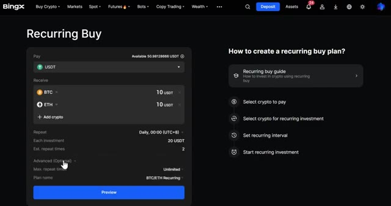
🔍 Agrandir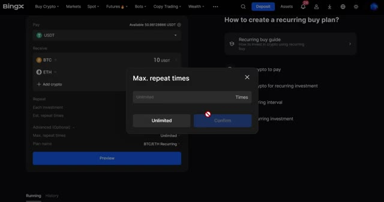
🔍 AgrandirTrès bien, donc maintenant vous savez comment utiliser absolument tous les bots de trading sur BingX, de la grille et du martingale jusqu'aux stratégies de signaux et à l'achat récurrent. Que vous vouliez profiter de la volatilité, automatiser votre DCA, ou connecter des signaux TradingView, vous avez tout l'arsenal juste ici. Et n'oubliez pas, si vous vous êtes inscrit avec mon lien dans la description, vous pouvez réclamer jusqu'à 9 800 USDT de bonus rien qu'en déposant et en tradant.
Interface & Outils : Plateforme d'échange BingX et interface graphique TradingView.
Contenu textuel & Code : Documentation sur le Signal Trading, URL de Webhook (`https://api.blofin.com/...`), formulaires de configuration d'alertes, et options de bonus de bienvenue de la plateforme.
Action / Démonstration : Navigation sur la section de trading par signaux de BingX et configuration des notifications de webhook sur TradingView.
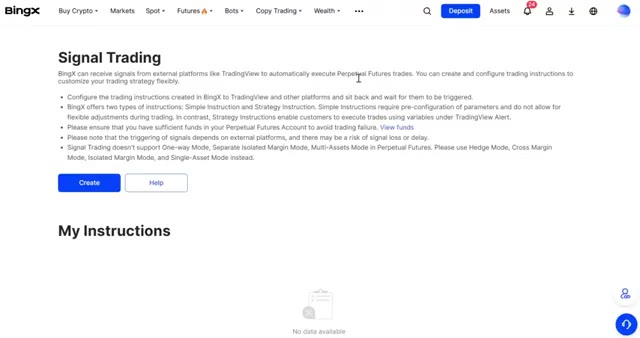
🔍 Agrandir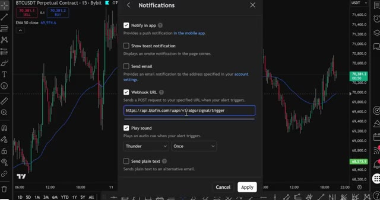
🔍 AgrandirAllez voir la section des récompenses dans votre compte. Il y a de l'argent gratuit qui vous y attend juste pour avoir utilisé la plateforme. Si vous voulez voir comment configurer des bots de trading sur d'autres plateformes comme Blowfin et Bybit, regardez les vidéos à l'écran en ce moment même. J'ai aussi préparé des guides étape par étape pour celles-là. Merci d'avoir regardé, et je vous dis à la prochaine dans une nouvelle vidéo.
Interface & Outils : BingX (plateforme d'échange de cryptomonnaies)
Contenu textuel & Code : Tâches à durée limitée, bons de récompense en USDT, et robots de trading IA (DOGEUSDT, BTCUSDT, SUIUSDT, SOLUSDT, ETHUSDT, XRPUSDT) avec backtests APR et fourchettes de prix.
Action / Démonstration : Navigation dans l'interface de la plateforme pour montrer les récompenses et les bots de trading automatisés.
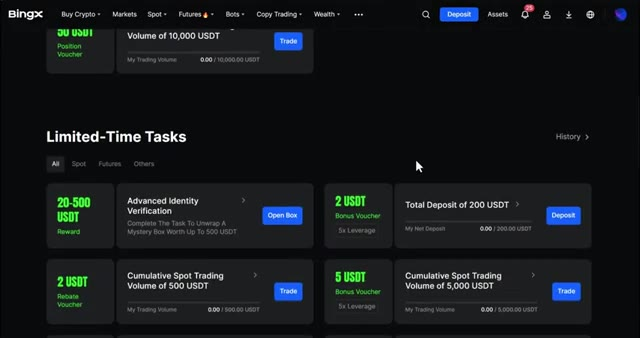
🔍 Agrandir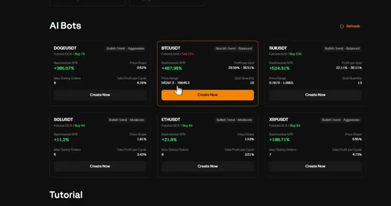
🔍 Agrandir